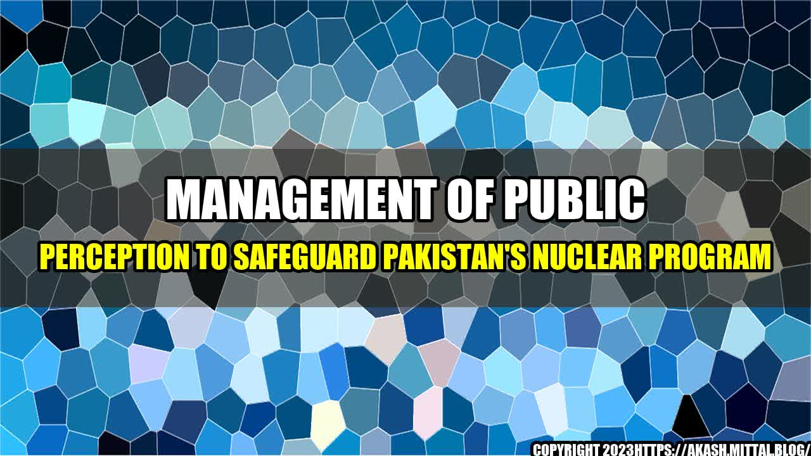

Management of Public Perception to Safeguard Pakistan's Nuclear Program
It was a bright sunny day in Karachi, Pakistan, when the news of Pakistan's successful nuclear test on May 28th, 1998 hit the headlines. The country had become a nuclear power and its nuclear program became a matter of national pride and international concern. The Pakistani government had to manage the public perception of its nuclear program to safeguard it from any kind of threat. Let's explore how Pakistan managed the public perception of its nuclear program.
Case Studies:
1. Pakistan's Nuclear Program as a Deterrent
Pakistan's nuclear program was developed to serve as a deterrent against India's nuclear program. The Pakistani government portrayed its nuclear program as essential for national security and survival. It was believed that the acquisition of nuclear weapons would deter India from any aggressive action against Pakistan. The public perception of the nuclear program was positive as it was considered a necessary evil in the wake of growing Indian aggression.
2. The Role of Media in Shaping Public Perception
The Pakistani government effectively used media to manage public perception of its nuclear program. The media was used to create a sense of national pride, with slogans like "Islamic Bomb" and "Pakistan Zindabad" (Long Live Pakistan) being used to provoke nationalist sentiments. This helped to create a positive perception of the program and the government's policies.
3. International Public Perception Management
The Pakistani government had to manage not only the public perception of its nuclear program within the country but also internationally. It had to counter the negative propaganda being spread by its rivals. The government used international forums such as the United Nations to present its nuclear program as a defensive measure and a matter of national security. This helped to create a positive image of the nuclear program internationally.
Conclusion:
In conclusion, management of public perception played a crucial role in safeguarding Pakistan's nuclear program. The government effectively used media, both national and international, to create a positive perception of its nuclear program. The public perception was managed in such a way that the program was seen as a necessary evil to ensure national security. The successful management of public perception not only helped to safeguard Pakistan's nuclear program but also made it a matter of national pride.
References and Hashtags:
- https://www.aljazeera.com/news/2020/6/2/what-do-pakistanis-think-of-the-countrys-nuclear-arsenal
- https://www.theguardian.com/world/2020/feb/28/pakistan-nuclear-weapons-arsenal-counters-indian-buildup
Hashtags:
- #PakistanNuclearProgram
- #NationalSecurity
- #NuclearDeterrence
Article Category:
- National Security
- Defense
- Public Perception
Curated by Team Akash.Mittal.Blog
Share on Twitter Share on LinkedIn